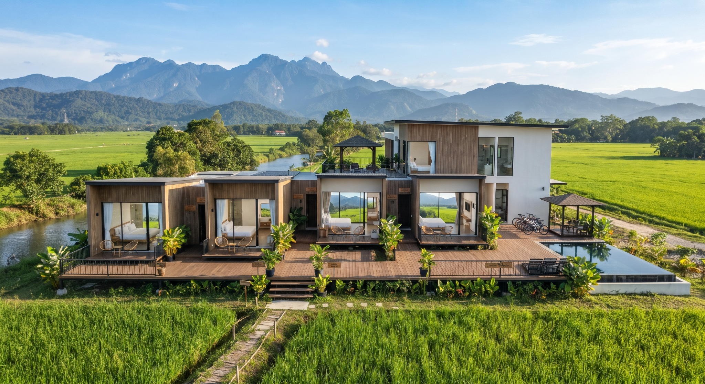

Hubungan dengan alam
Menjadikan sawah, gunung dan sungai sebagai sebahagian daripada pengalaman menginap.
GeoHome diinspirasikan oleh kerinduan terhadap ketenangan desa — sebuah ruang untuk berehat tanpa perlu meninggalkan keselesaan moden.

Diilhamkan daripada kerinduan terhadap ketenangan hidup di desa, GeoHome dibangunkan dengan konsep minimalis moden. Reka bentuknya menggabungkan elemen putih, kemasan kayu dan bukaan kaca yang membawa pemandangan luar ke dalam ruang penginapan.
Setiap sudut dirancang untuk memberi suasana yang lapang dan selesa, sambil mengekalkan hubungan visual dengan sawah padi serta panorama gunung di sekeliling.
Kenali pilihan bilikPengalaman penginapan yang berteraskan tiga prinsip.
Menjadikan sawah, gunung dan sungai sebagai sebahagian daripada pengalaman menginap.
Menggabungkan gaya minimalis dengan kemudahan asas untuk pengalaman rehat yang selesa.
Menggalakkan tetamu menikmati masa dengan lebih perlahan dan menghargai suasana sekeliling.
Identiti visual GeoHome mengambil inspirasi daripada landskap semula jadi. Kemasan kayu membawa kehangatan, warna neutral memberi rasa lapang, manakala tingkap kaca besar menghubungkan ruang dalaman dengan panorama luar.